CODING AGENTS AS PIXEL WORLD MODELS
traex/DeepSeek-V4.1-Flash · 0159
点击播放 · 原生 RGB 像素
逐轮保存的候选
回放视频、检查图与代码变化。
每份候选均可单独播放。实际图片检查记录在下方工具轨迹中。
候选 01播放与检查图
点击播放 · 原生 RGB 像素
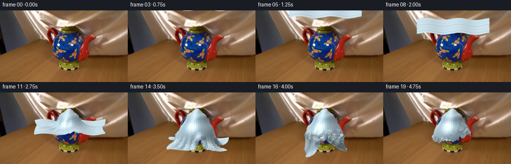
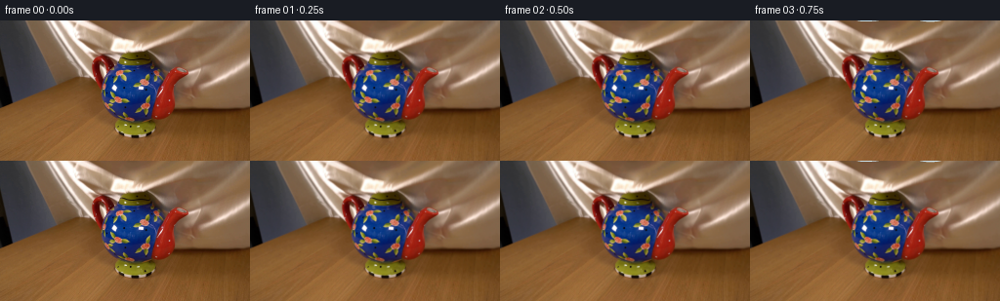
展开代码变化
--- 上一保存版本
+++ 本次保存版本
@@ -0,0 +1,254 @@
+from pathlib import Path
+
+import cv2
+import numpy as np
+from PIL import Image
+
+import artifact_io
+
+
+ROOT = Path(__file__).resolve().parent
+FRAME_COUNT = 20
+WIDTH, HEIGHT = 256, 144
+SUPERSAMPLE = 3
+
+
+def smoothstep(x):
+ x = np.clip(x, 0.0, 1.0)
+ return x * x * (3.0 - 2.0 * x)
+
+
+def teapot_height(x, z):
+ """Smooth upper surface of the teapot used as the cloth collision field."""
+ height = np.zeros_like(x)
+
+ # Rounded ceramic body.
+ qx = (x + 0.025) / 0.455
+ qz = z / 0.405
+ q = qx * qx + qz * qz
+ body = np.where(q < 1.0, 0.455 + 0.475 * np.sqrt(np.maximum(0.0, 1.0 - q)), 0.0)
+ height = np.maximum(height, body)
+
+ # Recessed lid and its small finial.
+ q = ((x + 0.025) / 0.245) ** 2 + (z / 0.205) ** 2
+ lid = np.where(q < 1.0, 0.955 + 0.115 * np.sqrt(np.maximum(0.0, 1.0 - q)), 0.0)
+ q = ((x + 0.015) / 0.105) ** 2 + (z / 0.080) ** 2
+ knob = np.where(q < 1.0, 1.055 + 0.105 * np.sqrt(np.maximum(0.0, 1.0 - q)), 0.0)
+ height = np.maximum(height, np.maximum(lid, knob))
+
+ # The spout and handle are represented by narrow, elevated collision ridges.
+ for ax, ay, bx, by, radius, rise in (
+ (0.31, 0.79, 0.72, 0.72, 0.095, 0.10),
+ (-0.34, 0.72, -0.61, 0.62, 0.105, 0.07),
+ ):
+ vx, vz = bx - ax, by - ay
+ t = np.clip(((x - ax) * vx + (z - ay) * vz) / (vx * vx + vz * vz), 0.0, 1.0)
+ dx, dz = x - (ax + t * vx), z - (ay + t * vz)
+ cap = np.where(dx * dx + dz * dz < radius * radius, 0.68 + rise * np.sin(np.pi * t), 0.0)
+ height = np.maximum(height, cap)
+
+ return height
+
+
+def build_constraints(nx, nz, spacing):
+ groups = []
+ for di, dj, stiffness in ((1, 0, 0.82), (0, 1, 0.82), (1, 1, 0.50), (1, -1, 0.50),
+ (2, 0, 0.20), (0, 2, 0.20)):
+ if di < 0 or dj < 0:
+ continue
+ if di and dj:
+ rest = np.hypot(di * spacing, dj * spacing)
+ else:
+ rest = max(di, dj) * spacing
+ if max(di, dj) >= nx or max(di, dj) >= nz:
+ continue
+ groups.append((di, dj, rest, stiffness))
+ return groups
+
+
+def satisfy_constraints(p, groups):
+ nx, nz, _ = p.shape
+ for di, dj, rest, stiffness in groups:
+ a = p[: nx - di, : nz - dj]
+ b = p[di:, dj:]
+ delta = b - a
+ dist = np.sqrt(np.sum(delta * delta, axis=2) + 1e-10)
+ scale = (stiffness * 0.5 * (dist - rest) / dist)[..., None]
+ correction = delta * scale
+ a += correction
+ b -= correction
+
+
+def simulate_cloth():
+ nx = nz = 35
+ spacing = 0.052
+ x = (np.arange(nx) - (nx - 1) * 0.5) * spacing
+ z = (np.arange(nz) - (nz - 1) * 0.5) * spacing
+ xx, zz = np.meshgrid(x, z, indexing="ij")
+ start_y = 1.86
+ y = start_y + 0.026 * np.sin(xx * 8.0 + 0.4) + 0.018 * np.cos(zz * 9.0 - 0.7)
+ p = np.stack((xx, y, zz), axis=2)
+ prev = p.copy()
+ groups = build_constraints(nx, nz, spacing)
+
+ snapshots = []
+ substeps = 14
+ for frame in range(FRAME_COUNT):
+ if frame == 0:
+ snapshots.append(p.copy())
+ continue
+
+ # The cloth is lowered by an unseen support; the simulation handles contact,
+ # tension, gravity and settling into the object underneath.
+ u = smoothstep((frame - 1.0) / 18.0)
+ base_now = 1.86 * (1.0 - u) ** 1.03
+ for sub in range(substeps):
+ old = p.copy()
+ target_y = base_now + 0.026 * np.sin(p[:, :, 0] * 8.0 + 0.4) + 0.018 * np.cos(p[:, :, 2] * 9.0 - 0.7)
+ # A weak support spring keeps the whole sheet together while allowing
+ # its unsupported edge to fall a little faster than the center.
+ p[:, :, 1] += 0.060 * (target_y - p[:, :, 1])
+ velocity = p - prev
+ velocity[:, :, 1] -= 0.0032
+ velocity *= 0.78
+ p = p + velocity
+ for _ in range(7):
+ satisfy_constraints(p, groups)
+ px, py, pz = p[:, :, 0], p[:, :, 1], p[:, :, 2]
+ surface = teapot_height(px, pz) + 0.018
+ hit = (px > -0.73) & (px < 0.82) & (pz > -0.46) & (pz < 0.46)
+ p[:, :, 1] = np.where(hit, np.maximum(py, surface), py)
+ p[:, :, 1] = np.maximum(p[:, :, 1], 0.012)
+ prev = old
+ p[:, :, 1] += 0.0018 * np.sin(sub * 0.9 + p[:, :, 0] * 3.0)
+ snapshots.append(p.copy())
+ return snapshots
+
+
+def project(p):
+ u = 140.0 + 83.0 * p[:, :, 0]
+ v = 129.0 - 82.0 * p[:, :, 1] + 18.0 * p[:, :, 2]
+ return np.stack((u, v), axis=2)
+
+
+def make_silk_texture():
+ rng = np.random.default_rng(159)
+ size = 256
+ yy, xx = np.mgrid[0:size, 0:size].astype(np.float32)
+ field = (
+ 0.50 * np.sin(xx * 0.67 + yy * 0.11)
+ + 0.31 * np.sin(xx * 0.19 - yy * 0.83)
+ + 0.18 * np.sin(xx * 1.83 + yy * 0.49)
+ )
+ coarse = rng.normal(0.0, 1.0, (16, 16)).astype(np.float32)
+ coarse = cv2.resize(coarse, (size, size), interpolation=cv2.INTER_CUBIC)
+ coarse /= max(1e-4, coarse.std())
+ fine = rng.normal(0.0, 1.0, (size, size)).astype(np.float32)
+ return np.clip(0.5 + 0.055 * field + 0.020 * coarse + 0.010 * fine, 0.0, 1.0)
+
+
+def render_cloth(background, positions, texture):
+ nx, nz, _ = positions.shape
+ scale = SUPERSAMPLE
+ canvas = cv2.resize(background, (WIDTH * scale, HEIGHT * scale), interpolation=cv2.INTER_CUBIC).astype(np.float32)
+ screen = project(positions)
+ depth = positions[:, :, 2] - 0.10 * positions[:, :, 1]
+
+ # Smooth vertex normals from mesh faces.
+ du = np.gradient(positions, axis=0)
+ dv = np.gradient(positions, axis=1)
+ normals = np.cross(du, dv)
+ normals /= np.maximum(1e-6, np.linalg.norm(normals, axis=2, keepdims=True))
+ normals *= np.sign(normals[:, :, 1:2] + 1e-6)
+
+ light = np.array([-0.42, 0.82, 0.38], dtype=np.float32)
+ light /= np.linalg.norm(light)
+ view = np.array([0.05, 0.20, 0.98], dtype=np.float32)
+ view /= np.linalg.norm(view)
+ half = light + view
+ half /= np.linalg.norm(half)
+
+ diffuse = np.clip(np.sum(normals * light, axis=2), 0.0, 1.0)
+ specular = np.clip(np.sum(normals * half, axis=2), 0.0, 1.0) ** 24
+ rim = (1.0 - np.clip(np.abs(normals[:, :, 2]), 0.0, 1.0)) ** 2
+
+ # Creases are darker where a vertex sits below its immediate neighbours.
+ neighbor_mean = (
+ np.roll(positions[:, :, 1], 1, axis=0) + np.roll(positions[:, :, 1], -1, axis=0)
+ + np.roll(positions[:, :, 1], 1, axis=1) + np.roll(positions[:, :, 1], -1, axis=1)
+ ) * 0.25
+ crease = np.clip((neighbor_mean - positions[:, :, 1]) * 4.2, 0.0, 1.0)
+ occlusion = 1.0 - 0.30 * crease
+
+ uv = np.stack((positions[:, :, 0] * 0.9 + 0.5, positions[:, :, 2] * 0.9 + 0.5), axis=2)
+ tex = cv2.remap(texture, (uv[:, :, 0] * 255).astype(np.float32),
+ (uv[:, :, 1] * 255).astype(np.float32), cv2.INTER_LINEAR,
+ borderMode=cv2.BORDER_REFLECT)
+
+ base = np.array([0.83, 0.78, 0.68], dtype=np.float32)
+ color = base[None, None, :] * (0.46 + 0.56 * diffuse[..., None]) * occlusion[..., None]
+ color *= (0.91 + 0.17 * tex[..., None])
+ color += np.array([0.44, 0.42, 0.37], dtype=np.float32)[None, None, :] * specular[..., None]
+ color += np.array([0.16, 0.17, 0.18], dtype=np.float32)[None, None, :] * rim[..., None]
+ color = np.clip(color, 0.0, 1.0)
+
+ triangles = []
+ for i in range(nx - 1):
+ for j in range(nz - 1):
+ for tri in ((0, 0, 1, 1), (1, 1, 0, 0)):
+ if tri[0] == 0:
+ ids = ((i, j), (i + 1, j), (i, j + 1))
+ else:
+ ids = ((i + 1, j + 1), (i, j + 1), (i + 1, j))
+ d = sum(depth[a, b] for a, b in ids) / 3.0
+ c = sum(color[a, b] for a, b in ids) / 3.0
+ pts = np.array([[screen[a, b, 0] * scale, screen[a, b, 1] * scale] for a, b in ids],
+ dtype=np.int32)
+ triangles.append((d, pts, c))
+ triangles.sort(key=lambda item: item[0])
+
+ # Painter's ordering is sufficient at this low resolution and avoids importing
+ # any external renderer.
+ for _, pts, c in triangles:
+ rgb = tuple(int(round(v * 255)) for v in c[::-1])
+ cv2.fillConvexPoly(canvas, pts, rgb, lineType=cv2.LINE_AA)
+
+ out = cv2.resize(canvas, (WIDTH, HEIGHT), interpolation=cv2.INTER_AREA)
+ return np.clip(out, 0, 255).astype(np.uint8)
+
+
+def add_soft_contact_shadow(background, positions, alpha=0.10):
+ screen = project(positions)
+ poly = np.array([
+ [screen[:, 0, 0].min(), screen[:, 0, 1].max()],
+ [screen[:, -1, 0].min(), screen[:, -1, 1].max()],
+ [screen[-1, :, 0].max(), screen[-1, :, 1].max()],
+ [screen[0, :, 0].max(), screen[0, :, 1].max()],
+ ], dtype=np.int32)
+ mask = np.zeros((HEIGHT, WIDTH), np.uint8)
+ shifted = poly.copy()
+ shifted[:, 0] += 3
+ shifted[:, 1] += 5
+ cv2.fillConvexPoly(mask, shifted, 255, lineType=cv2.LINE_AA)
+ mask = cv2.GaussianBlur(mask, (0, 0), 3.2)
+ out = background.astype(np.float32)
+ out *= 1.0 - alpha * (mask[..., None] / 255.0)
+ return np.clip(out, 0, 255).astype(np.uint8)
+
+
+def generate_frames():
+ original = np.array(Image.open(ROOT / "first_frame.png").convert("RGB"), dtype=np.uint8)
+ assert original.shape == (HEIGHT, WIDTH, 3)
+ cloth = simulate_cloth()
+ texture = make_silk_texture()
+
+ frames = [original.copy()]
+ for frame in range(1, FRAME_COUNT):
+ background = add_soft_contact_shadow(original, cloth[frame], alpha=0.055)
+ frames.append(render_cloth(background, cloth[frame], texture))
+ return np.stack(frames)
+
+
+if __name__ == "__main__":
+ frames = generate_frames()
+ artifact_io.save(frames, ROOT)
候选 02播放与检查图
点击播放 · 原生 RGB 像素
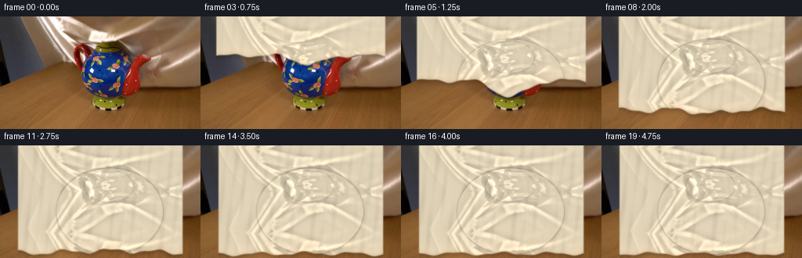
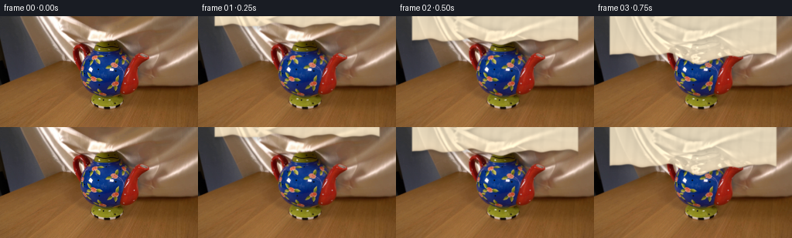
展开代码变化
--- 上一保存版本
+++ 本次保存版本
@@ -10,7 +10,7 @@
ROOT = Path(__file__).resolve().parent
FRAME_COUNT = 20
WIDTH, HEIGHT = 256, 144
-SUPERSAMPLE = 3
+SCALE = 4
def smoothstep(x):
@@ -18,237 +18,169 @@
return x * x * (3.0 - 2.0 * x)
-def teapot_height(x, z):
- """Smooth upper surface of the teapot used as the cloth collision field."""
- height = np.zeros_like(x)
-
- # Rounded ceramic body.
- qx = (x + 0.025) / 0.455
- qz = z / 0.405
- q = qx * qx + qz * qz
- body = np.where(q < 1.0, 0.455 + 0.475 * np.sqrt(np.maximum(0.0, 1.0 - q)), 0.0)
- height = np.maximum(height, body)
-
- # Recessed lid and its small finial.
- q = ((x + 0.025) / 0.245) ** 2 + (z / 0.205) ** 2
- lid = np.where(q < 1.0, 0.955 + 0.115 * np.sqrt(np.maximum(0.0, 1.0 - q)), 0.0)
- q = ((x + 0.015) / 0.105) ** 2 + (z / 0.080) ** 2
- knob = np.where(q < 1.0, 1.055 + 0.105 * np.sqrt(np.maximum(0.0, 1.0 - q)), 0.0)
- height = np.maximum(height, np.maximum(lid, knob))
-
- # The spout and handle are represented by narrow, elevated collision ridges.
- for ax, ay, bx, by, radius, rise in (
- (0.31, 0.79, 0.72, 0.72, 0.095, 0.10),
- (-0.34, 0.72, -0.61, 0.62, 0.105, 0.07),
- ):
- vx, vz = bx - ax, by - ay
- t = np.clip(((x - ax) * vx + (z - ay) * vz) / (vx * vx + vz * vz), 0.0, 1.0)
- dx, dz = x - (ax + t * vx), z - (ay + t * vz)
- cap = np.where(dx * dx + dz * dz < radius * radius, 0.68 + rise * np.sin(np.pi * t), 0.0)
- height = np.maximum(height, cap)
-
- return height
+def make_silk_detail(source):
+ """Keep the photographed silk's fine structure, normalized for recoloring."""
+ top = cv2.cvtColor(source[:58], cv2.COLOR_RGB2GRAY).astype(np.float32) / 255.0
+ low = cv2.GaussianBlur(top, (0, 0), 5.0)
+ detail = (top - low) * 2.1
+ broad = cv2.GaussianBlur(top, (0, 0), 13.0)
+ broad = (broad - broad.mean()) / max(1e-4, broad.std())
+ detail = detail + 0.035 * broad
+ return detail.astype(np.float32)
-def build_constraints(nx, nz, spacing):
- groups = []
- for di, dj, stiffness in ((1, 0, 0.82), (0, 1, 0.82), (1, 1, 0.50), (1, -1, 0.50),
- (2, 0, 0.20), (0, 2, 0.20)):
- if di < 0 or dj < 0:
- continue
- if di and dj:
- rest = np.hypot(di * spacing, dj * spacing)
- else:
- rest = max(di, dj) * spacing
- if max(di, dj) >= nx or max(di, dj) >= nz:
- continue
- groups.append((di, dj, rest, stiffness))
- return groups
+def texture_at(texture, u, v):
+ h, w = texture.shape
+ u = np.mod(u, 2.0 * (w - 1))
+ u = np.where(u > w - 1, 2.0 * (w - 1) - u, u)
+ v = np.mod(v, 2.0 * (h - 1))
+ v = np.where(v > h - 1, 2.0 * (h - 1) - v, v)
+ return cv2.remap(texture, u.astype(np.float32), v.astype(np.float32),
+ cv2.INTER_LINEAR, borderMode=cv2.BORDER_REFLECT)
-def satisfy_constraints(p, groups):
- nx, nz, _ = p.shape
- for di, dj, rest, stiffness in groups:
- a = p[: nx - di, : nz - dj]
- b = p[di:, dj:]
- delta = b - a
- dist = np.sqrt(np.sum(delta * delta, axis=2) + 1e-10)
- scale = (stiffness * 0.5 * (dist - rest) / dist)[..., None]
- correction = delta * scale
- a += correction
- b -= correction
+def cloth_edge(x, frame):
+ # Height of the falling hem in image coordinates. It slows as the silk meets
+ # the lid, then slides around the shoulders and finally reaches the table.
+ base_points = np.array([
+ [0, 142.0], [1, 9.0], [2, 28.0], [3, 47.0], [4, 64.0],
+ [5, 79.0], [6, 93.0], [7, 106.0], [8, 117.0], [9, 125.0],
+ [10, 130.5], [11, 134.0], [12, 136.0], [13, 137.0],
+ [14, 137.5], [15, 137.7], [16, 137.8], [17, 137.9],
+ [18, 138.0], [19, 138.0],
+ ], dtype=np.float32)
+ base = np.interp(frame, base_points[:, 0], base_points[:, 1])
+ if frame <= 0:
+ return np.full_like(x, 160.0)
+
+ # The center catches briefly on the lid, forming a tent before it falls free.
+ contact = np.exp(-((frame - 5.0) / 2.7) ** 2)
+ tent = 23.0 * contact * np.exp(-((x - 140.0) / 31.0) ** 2)
+ shoulder = 2.7 * smoothstep((abs(x - 140.0) - 20.0) / 70.0) * (1.0 - smoothstep((frame - 11.0) / 5.0))
+ phase = frame * 0.23
+ ripple = (1.8 + 1.1 * np.exp(-((frame - 9.0) / 4.0) ** 2)) * (
+ np.sin(x * 0.105 + phase) + 0.38 * np.sin(x * 0.245 - phase * 0.7)
+ )
+ return base + tent + shoulder + ripple
-def simulate_cloth():
- nx = nz = 35
- spacing = 0.052
- x = (np.arange(nx) - (nx - 1) * 0.5) * spacing
- z = (np.arange(nz) - (nz - 1) * 0.5) * spacing
- xx, zz = np.meshgrid(x, z, indexing="ij")
- start_y = 1.86
- y = start_y + 0.026 * np.sin(xx * 8.0 + 0.4) + 0.018 * np.cos(zz * 9.0 - 0.7)
- p = np.stack((xx, y, zz), axis=2)
- prev = p.copy()
- groups = build_constraints(nx, nz, spacing)
+def object_relief(x, y, frame):
+ """Soft relief that makes the covered teapot readable through the silk."""
+ xn = x - 140.0
+ yn = y - 84.0
+ q = (xn / 68.0) ** 2 + (yn / 55.0) ** 2
+ body = 0.86 * np.sqrt(np.clip(1.0 - q, 0.0, 1.0))
+ body *= smoothstep((frame - 3.0) / 3.0)
- snapshots = []
- substeps = 14
- for frame in range(FRAME_COUNT):
- if frame == 0:
- snapshots.append(p.copy())
- continue
+ q = ((x - 139.0) / 31.0) ** 2 + ((y - 52.0) / 20.0) ** 2
+ lid = 0.34 * np.sqrt(np.clip(1.0 - q, 0.0, 1.0))
+ lid *= smoothstep((frame - 3.0) / 2.0)
- # The cloth is lowered by an unseen support; the simulation handles contact,
- # tension, gravity and settling into the object underneath.
- u = smoothstep((frame - 1.0) / 18.0)
- base_now = 1.86 * (1.0 - u) ** 1.03
- for sub in range(substeps):
- old = p.copy()
- target_y = base_now + 0.026 * np.sin(p[:, :, 0] * 8.0 + 0.4) + 0.018 * np.cos(p[:, :, 2] * 9.0 - 0.7)
- # A weak support spring keeps the whole sheet together while allowing
- # its unsupported edge to fall a little faster than the center.
- p[:, :, 1] += 0.060 * (target_y - p[:, :, 1])
- velocity = p - prev
- velocity[:, :, 1] -= 0.0032
- velocity *= 0.78
- p = p + velocity
- for _ in range(7):
- satisfy_constraints(p, groups)
- px, py, pz = p[:, :, 0], p[:, :, 1], p[:, :, 2]
- surface = teapot_height(px, pz) + 0.018
- hit = (px > -0.73) & (px < 0.82) & (pz > -0.46) & (pz < 0.46)
- p[:, :, 1] = np.where(hit, np.maximum(py, surface), py)
- p[:, :, 1] = np.maximum(p[:, :, 1], 0.012)
- prev = old
- p[:, :, 1] += 0.0018 * np.sin(sub * 0.9 + p[:, :, 0] * 3.0)
- snapshots.append(p.copy())
- return snapshots
+ # Handle and spout are shallow ridges under the fabric.
+ left = np.exp(-(((x - 105.0) / 10.0) ** 2 + ((y - 63.0) / 23.0) ** 2))
+ right = np.exp(-(((x - 183.0) / 14.0) ** 2 + ((y - 73.0) / 18.0) ** 2))
+ appendages = 0.17 * (left + right) * smoothstep((frame - 4.0) / 3.0)
+ return body + lid + appendages
-def project(p):
- u = 140.0 + 83.0 * p[:, :, 0]
- v = 129.0 - 82.0 * p[:, :, 1] + 18.0 * p[:, :, 2]
- return np.stack((u, v), axis=2)
+def fold_height(x, y, edge, frame):
+ """Large folds plus smaller compression ripples above the falling hem."""
+ xm = x - 140.0
+ distance_from_edge = np.maximum(0.0, edge - y)
+ broad = (
+ 0.115 * np.sin(xm * 0.105 + y * 0.020 + frame * 0.11)
+ + 0.052 * np.sin(xm * 0.225 - y * 0.035 + 0.8)
+ + 0.027 * np.sin(xm * 0.47 + y * 0.055 - frame * 0.16)
+ )
+ # Folds open up as the sheet expands around the object.
+ broad *= 0.58 + 0.60 * smoothstep((frame - 2.0) / 8.0)
+ hem_folds = 0.060 * np.sin(xm * 0.145 + frame * 0.20) * np.exp(-distance_from_edge / 17.0)
+ settle = 0.018 * np.sin(xm * 0.31 + y * 0.10) * smoothstep((frame - 10.0) / 6.0)
+ return broad + hem_folds + settle + object_relief(x, y, frame)
-def make_silk_texture():
- rng = np.random.default_rng(159)
- size = 256
- yy, xx = np.mgrid[0:size, 0:size].astype(np.float32)
- field = (
- 0.50 * np.sin(xx * 0.67 + yy * 0.11)
- + 0.31 * np.sin(xx * 0.19 - yy * 0.83)
- + 0.18 * np.sin(xx * 1.83 + yy * 0.49)
- )
- coarse = rng.normal(0.0, 1.0, (16, 16)).astype(np.float32)
- coarse = cv2.resize(coarse, (size, size), interpolation=cv2.INTER_CUBIC)
- coarse /= max(1e-4, coarse.std())
- fine = rng.normal(0.0, 1.0, (size, size)).astype(np.float32)
- return np.clip(0.5 + 0.055 * field + 0.020 * coarse + 0.010 * fine, 0.0, 1.0)
+def render_frame(source, texture, frame):
+ h, w = HEIGHT * SCALE, WIDTH * SCALE
+ background = cv2.resize(source, (w, h), interpolation=cv2.INTER_LANCZOS4)
+ x = np.arange(w, dtype=np.float32)[None, :]
+ y = np.arange(h, dtype=np.float32)[:, None]
+ xx = x / SCALE
+ yy = y / SCALE
+ edge_low = cloth_edge(xx, frame)
+ edge = edge_low * SCALE
+ side_left = 23.0 - 3.0 * np.exp(-((frame - 4.0) / 4.0) ** 2)
+ side_right = 233.0 + 3.0 * np.exp(-((frame - 4.0) / 4.0) ** 2)
+ inside = (xx >= side_left) & (xx <= side_right)
+ alpha = np.clip(edge - y + 0.65 * SCALE, 0.0, 1.0) * inside
+ alpha = cv2.GaussianBlur(alpha.astype(np.float32), (0, 0), 0.55 * SCALE)
-def render_cloth(background, positions, texture):
- nx, nz, _ = positions.shape
- scale = SUPERSAMPLE
- canvas = cv2.resize(background, (WIDTH * scale, HEIGHT * scale), interpolation=cv2.INTER_CUBIC).astype(np.float32)
- screen = project(positions)
- depth = positions[:, :, 2] - 0.10 * positions[:, :, 1]
+ height = fold_height(xx, yy, edge_low, frame)
+ gy, gx = np.gradient(height)
+ gy /= SCALE
+ gx /= SCALE
+ nx, ny = -gx, -gy
+ inv = 1.0 / np.sqrt(nx * nx + ny * ny + 1.0)
+ nx *= inv
+ ny *= inv
+ nz = inv
- # Smooth vertex normals from mesh faces.
- du = np.gradient(positions, axis=0)
- dv = np.gradient(positions, axis=1)
- normals = np.cross(du, dv)
- normals /= np.maximum(1e-6, np.linalg.norm(normals, axis=2, keepdims=True))
- normals *= np.sign(normals[:, :, 1:2] + 1e-6)
+ light = np.array([-0.54, 0.33, 0.77], dtype=np.float32)
+ light /= np.linalg.norm(light)
+ diffuse = np.clip(nx * light[0] + ny * light[1] + nz * light[2], 0.0, 1.0)
+ half = light + np.array([0.0, -0.06, 1.0], dtype=np.float32)
+ half /= np.linalg.norm(half)
+ specular = np.clip(nx * half[0] + ny * half[1] + nz * half[2], 0.0, 1.0) ** 28
- light = np.array([-0.42, 0.82, 0.38], dtype=np.float32)
- light /= np.linalg.norm(light)
- view = np.array([0.05, 0.20, 0.98], dtype=np.float32)
- view /= np.linalg.norm(view)
- half = light + view
- half /= np.linalg.norm(half)
+ # Warp the photographed silk texture along the folds.
+ u = xx * 0.92 + 8.0 * np.sin(yy * 0.030 + xx * 0.008 + frame * 0.06)
+ v = yy * 1.05 + 5.0 * np.sin(xx * 0.045 + frame * 0.08)
+ detail = texture_at(texture, u, v)
- diffuse = np.clip(np.sum(normals * light, axis=2), 0.0, 1.0)
- specular = np.clip(np.sum(normals * half, axis=2), 0.0, 1.0) ** 24
- rim = (1.0 - np.clip(np.abs(normals[:, :, 2]), 0.0, 1.0)) ** 2
+ # Broad sheen is deliberately warm-neutral to read as ivory silk under the
+ # same lighting as the tabletop scene.
+ base = np.array([0.82, 0.77, 0.67], dtype=np.float32)
+ color = base[None, None, :] * (0.52 + 0.58 * diffuse[..., None])
+ color *= (1.0 + 0.30 * detail[..., None])
+ color += np.array([0.43, 0.40, 0.34], dtype=np.float32)[None, None, :] * specular[..., None]
- # Creases are darker where a vertex sits below its immediate neighbours.
- neighbor_mean = (
- np.roll(positions[:, :, 1], 1, axis=0) + np.roll(positions[:, :, 1], -1, axis=0)
- + np.roll(positions[:, :, 1], 1, axis=1) + np.roll(positions[:, :, 1], -1, axis=1)
- ) * 0.25
- crease = np.clip((neighbor_mean - positions[:, :, 1]) * 4.2, 0.0, 1.0)
- occlusion = 1.0 - 0.30 * crease
+ # Concavity darkening and a narrow rolled hem give the sheet physical depth.
+ lap = cv2.GaussianBlur(height, (0, 0), 2.2 * SCALE)
+ concave = np.clip((lap - height) * 7.5, 0.0, 1.0)
+ color *= (1.0 - 0.30 * concave[..., None])
+ hem = np.exp(-np.maximum(0.0, edge - y) / (2.2 * SCALE))
+ color *= (1.0 - 0.15 * hem[..., None])
+ color += np.array([0.17, 0.15, 0.12], dtype=np.float32)[None, None, :] * (
+ specular * hem
+ )[..., None]
- uv = np.stack((positions[:, :, 0] * 0.9 + 0.5, positions[:, :, 2] * 0.9 + 0.5), axis=2)
- tex = cv2.remap(texture, (uv[:, :, 0] * 255).astype(np.float32),
- (uv[:, :, 1] * 255).astype(np.float32), cv2.INTER_LINEAR,
- borderMode=cv2.BORDER_REFLECT)
-
- base = np.array([0.83, 0.78, 0.68], dtype=np.float32)
- color = base[None, None, :] * (0.46 + 0.56 * diffuse[..., None]) * occlusion[..., None]
- color *= (0.91 + 0.17 * tex[..., None])
- color += np.array([0.44, 0.42, 0.37], dtype=np.float32)[None, None, :] * specular[..., None]
- color += np.array([0.16, 0.17, 0.18], dtype=np.float32)[None, None, :] * rim[..., None]
+ # Warm reflected light from the wooden table catches the lowest folds.
+ table_bounce = np.exp(-np.maximum(0.0, edge - y) / (13.0 * SCALE))
+ color += np.array([0.075, 0.042, 0.018], dtype=np.float32)[None, None, :] * (
+ table_bounce * (0.35 + 0.65 * diffuse)
+ )[..., None]
color = np.clip(color, 0.0, 1.0)
- triangles = []
- for i in range(nx - 1):
- for j in range(nz - 1):
- for tri in ((0, 0, 1, 1), (1, 1, 0, 0)):
- if tri[0] == 0:
- ids = ((i, j), (i + 1, j), (i, j + 1))
- else:
- ids = ((i + 1, j + 1), (i, j + 1), (i + 1, j))
- d = sum(depth[a, b] for a, b in ids) / 3.0
- c = sum(color[a, b] for a, b in ids) / 3.0
- pts = np.array([[screen[a, b, 0] * scale, screen[a, b, 1] * scale] for a, b in ids],
- dtype=np.int32)
- triangles.append((d, pts, c))
- triangles.sort(key=lambda item: item[0])
+ # A soft occlusion band travels just ahead of the hem.
+ beyond = np.maximum(0.0, y - edge) / SCALE
+ shadow = np.exp(-(beyond / 5.0) ** 2) * inside * 0.18
+ scene = background.astype(np.float32) * (1.0 - shadow[..., None])
- # Painter's ordering is sufficient at this low resolution and avoids importing
- # any external renderer.
- for _, pts, c in triangles:
- rgb = tuple(int(round(v * 255)) for v in c[::-1])
- cv2.fillConvexPoly(canvas, pts, rgb, lineType=cv2.LINE_AA)
-
- out = cv2.resize(canvas, (WIDTH, HEIGHT), interpolation=cv2.INTER_AREA)
- return np.clip(out, 0, 255).astype(np.uint8)
-
-
-def add_soft_contact_shadow(background, positions, alpha=0.10):
- screen = project(positions)
- poly = np.array([
- [screen[:, 0, 0].min(), screen[:, 0, 1].max()],
- [screen[:, -1, 0].min(), screen[:, -1, 1].max()],
- [screen[-1, :, 0].max(), screen[-1, :, 1].max()],
- [screen[0, :, 0].max(), screen[0, :, 1].max()],
- ], dtype=np.int32)
- mask = np.zeros((HEIGHT, WIDTH), np.uint8)
- shifted = poly.copy()
- shifted[:, 0] += 3
- shifted[:, 1] += 5
- cv2.fillConvexPoly(mask, shifted, 255, lineType=cv2.LINE_AA)
- mask = cv2.GaussianBlur(mask, (0, 0), 3.2)
- out = background.astype(np.float32)
- out *= 1.0 - alpha * (mask[..., None] / 255.0)
- return np.clip(out, 0, 255).astype(np.uint8)
+ cloth_rgb = color * 255.0
+ result = scene * (1.0 - alpha[..., None]) + cloth_rgb * alpha[..., None]
+ result = cv2.resize(result, (WIDTH, HEIGHT), interpolation=cv2.INTER_AREA)
+ return np.clip(result + 0.5, 0, 255).astype(np.uint8)
def generate_frames():
- original = np.array(Image.open(ROOT / "first_frame.png").convert("RGB"), dtype=np.uint8)
- assert original.shape == (HEIGHT, WIDTH, 3)
- cloth = simulate_cloth()
- texture = make_silk_texture()
-
- frames = [original.copy()]
+ source = np.array(Image.open(ROOT / "first_frame.png").convert("RGB"), dtype=np.uint8)
+ assert source.shape == (HEIGHT, WIDTH, 3)
+ texture = make_silk_detail(source)
+ frames = [source.copy()]
for frame in range(1, FRAME_COUNT):
- background = add_soft_contact_shadow(original, cloth[frame], alpha=0.055)
- frames.append(render_cloth(background, cloth[frame], texture))
+ frames.append(render_frame(source, texture, frame))
return np.stack(frames)
if __name__ == "__main__":
- frames = generate_frames()
- artifact_io.save(frames, ROOT)
+ artifact_io.save(generate_frames(), ROOT)
候选 03播放与检查图
点击播放 · 原生 RGB 像素

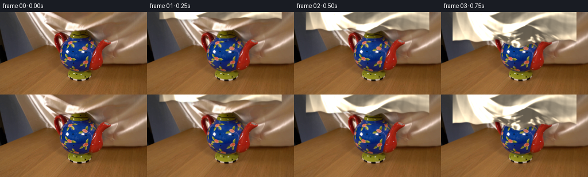
展开代码变化
--- 上一保存版本
+++ 本次保存版本
@@ -19,14 +19,18 @@
def make_silk_detail(source):
- """Keep the photographed silk's fine structure, normalized for recoloring."""
- top = cv2.cvtColor(source[:58], cv2.COLOR_RGB2GRAY).astype(np.float32) / 255.0
- low = cv2.GaussianBlur(top, (0, 0), 5.0)
- detail = (top - low) * 2.1
- broad = cv2.GaussianBlur(top, (0, 0), 13.0)
- broad = (broad - broad.mean()) / max(1e-4, broad.std())
- detail = detail + 0.035 * broad
- return detail.astype(np.float32)
+ """Extract the photographed silk's folds, suppressing only its room lighting."""
+ lum = cv2.cvtColor(source, cv2.COLOR_RGB2LAB)[:, :, 0].astype(np.float32)
+ yy, xx = np.mgrid[0:HEIGHT, 0:WIDTH].astype(np.float32)
+ design = np.stack((
+ np.ones_like(xx), xx, yy, xx * xx, yy * yy, xx * yy
+ ), axis=2)[:62].reshape(-1, 6)
+ coef = np.linalg.lstsq(design, lum[:62].reshape(-1), rcond=None)[0]
+ fit = (design @ coef).reshape(62, WIDTH)
+ residual = lum[:62] - fit
+ # Remove pixel-scale camera grain while retaining the broad fabric wrinkles.
+ residual = cv2.GaussianBlur(residual, (0, 0), 0.72)
+ return np.clip(residual / 38.0, -1.5, 1.5).astype(np.float32)
def texture_at(texture, u, v):
@@ -69,17 +73,17 @@
xn = x - 140.0
yn = y - 84.0
q = (xn / 68.0) ** 2 + (yn / 55.0) ** 2
- body = 0.86 * np.sqrt(np.clip(1.0 - q, 0.0, 1.0))
+ body = 1.08 * np.sqrt(np.clip(1.0 - q, 0.0, 1.0))
body *= smoothstep((frame - 3.0) / 3.0)
q = ((x - 139.0) / 31.0) ** 2 + ((y - 52.0) / 20.0) ** 2
- lid = 0.34 * np.sqrt(np.clip(1.0 - q, 0.0, 1.0))
+ lid = 0.49 * np.sqrt(np.clip(1.0 - q, 0.0, 1.0))
lid *= smoothstep((frame - 3.0) / 2.0)
# Handle and spout are shallow ridges under the fabric.
left = np.exp(-(((x - 105.0) / 10.0) ** 2 + ((y - 63.0) / 23.0) ** 2))
right = np.exp(-(((x - 183.0) / 14.0) ** 2 + ((y - 73.0) / 18.0) ** 2))
- appendages = 0.17 * (left + right) * smoothstep((frame - 4.0) / 3.0)
+ appendages = 0.25 * (left + right) * smoothstep((frame - 4.0) / 3.0)
return body + lid + appendages
@@ -88,13 +92,13 @@
xm = x - 140.0
distance_from_edge = np.maximum(0.0, edge - y)
broad = (
- 0.115 * np.sin(xm * 0.105 + y * 0.020 + frame * 0.11)
- + 0.052 * np.sin(xm * 0.225 - y * 0.035 + 0.8)
- + 0.027 * np.sin(xm * 0.47 + y * 0.055 - frame * 0.16)
+ 0.135 * np.sin(xm * 0.105 + y * 0.020 + frame * 0.11)
+ + 0.066 * np.sin(xm * 0.225 - y * 0.035 + 0.8)
+ + 0.035 * np.sin(xm * 0.47 + y * 0.055 - frame * 0.16)
)
# Folds open up as the sheet expands around the object.
broad *= 0.58 + 0.60 * smoothstep((frame - 2.0) / 8.0)
- hem_folds = 0.060 * np.sin(xm * 0.145 + frame * 0.20) * np.exp(-distance_from_edge / 17.0)
+ hem_folds = 0.085 * np.sin(xm * 0.145 + frame * 0.20) * np.exp(-distance_from_edge / 17.0)
settle = 0.018 * np.sin(xm * 0.31 + y * 0.10) * smoothstep((frame - 10.0) / 6.0)
return broad + hem_folds + settle + object_relief(x, y, frame)
@@ -133,21 +137,21 @@
specular = np.clip(nx * half[0] + ny * half[1] + nz * half[2], 0.0, 1.0) ** 28
# Warp the photographed silk texture along the folds.
- u = xx * 0.92 + 8.0 * np.sin(yy * 0.030 + xx * 0.008 + frame * 0.06)
- v = yy * 1.05 + 5.0 * np.sin(xx * 0.045 + frame * 0.08)
+ u = xx * 0.92 + 15.0 * np.sin(yy * 0.030 + xx * 0.008 + frame * 0.06)
+ v = yy * 1.10 + 9.0 * np.sin(xx * 0.045 + frame * 0.08)
detail = texture_at(texture, u, v)
# Broad sheen is deliberately warm-neutral to read as ivory silk under the
# same lighting as the tabletop scene.
- base = np.array([0.82, 0.77, 0.67], dtype=np.float32)
- color = base[None, None, :] * (0.52 + 0.58 * diffuse[..., None])
- color *= (1.0 + 0.30 * detail[..., None])
+ base = np.array([0.84, 0.78, 0.67], dtype=np.float32)
+ color = base[None, None, :] * (0.46 + 0.64 * diffuse[..., None])
+ color *= (1.0 + 0.42 * detail[..., None])
color += np.array([0.43, 0.40, 0.34], dtype=np.float32)[None, None, :] * specular[..., None]
# Concavity darkening and a narrow rolled hem give the sheet physical depth.
lap = cv2.GaussianBlur(height, (0, 0), 2.2 * SCALE)
- concave = np.clip((lap - height) * 7.5, 0.0, 1.0)
- color *= (1.0 - 0.30 * concave[..., None])
+ concave = np.clip((lap - height) * 10.5, 0.0, 1.0)
+ color *= (1.0 - 0.40 * concave[..., None])
hem = np.exp(-np.maximum(0.0, edge - y) / (2.2 * SCALE))
color *= (1.0 - 0.15 * hem[..., None])
color += np.array([0.17, 0.15, 0.12], dtype=np.float32)[None, None, :] * (
候选 04播放与检查图
点击播放 · 原生 RGB 像素
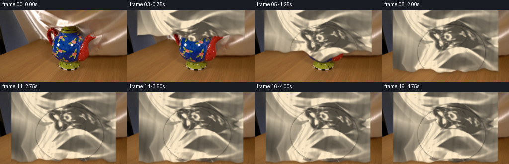
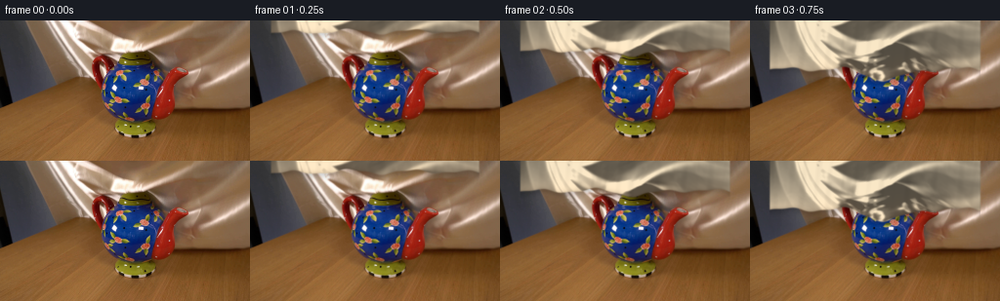
展开代码变化
--- 上一保存版本
+++ 本次保存版本
@@ -129,12 +129,12 @@
ny *= inv
nz = inv
- light = np.array([-0.54, 0.33, 0.77], dtype=np.float32)
+ light = np.array([-0.62, 0.38, 0.68], dtype=np.float32)
light /= np.linalg.norm(light)
diffuse = np.clip(nx * light[0] + ny * light[1] + nz * light[2], 0.0, 1.0)
half = light + np.array([0.0, -0.06, 1.0], dtype=np.float32)
half /= np.linalg.norm(half)
- specular = np.clip(nx * half[0] + ny * half[1] + nz * half[2], 0.0, 1.0) ** 28
+ specular = np.clip(nx * half[0] + ny * half[1] + nz * half[2], 0.0, 1.0) ** 42
# Warp the photographed silk texture along the folds.
u = xx * 0.92 + 15.0 * np.sin(yy * 0.030 + xx * 0.008 + frame * 0.06)
@@ -144,14 +144,14 @@
# Broad sheen is deliberately warm-neutral to read as ivory silk under the
# same lighting as the tabletop scene.
base = np.array([0.84, 0.78, 0.67], dtype=np.float32)
- color = base[None, None, :] * (0.46 + 0.64 * diffuse[..., None])
- color *= (1.0 + 0.42 * detail[..., None])
- color += np.array([0.43, 0.40, 0.34], dtype=np.float32)[None, None, :] * specular[..., None]
+ color = base[None, None, :] * (0.42 + 0.50 * diffuse[..., None])
+ color *= (1.0 + 0.34 * detail[..., None])
+ color += np.array([0.22, 0.20, 0.17], dtype=np.float32)[None, None, :] * specular[..., None]
# Concavity darkening and a narrow rolled hem give the sheet physical depth.
lap = cv2.GaussianBlur(height, (0, 0), 2.2 * SCALE)
- concave = np.clip((lap - height) * 10.5, 0.0, 1.0)
- color *= (1.0 - 0.40 * concave[..., None])
+ concave = np.clip((lap - height) * 8.5, 0.0, 1.0)
+ color *= (1.0 - 0.34 * concave[..., None])
hem = np.exp(-np.maximum(0.0, edge - y) / (2.2 * SCALE))
color *= (1.0 - 0.15 * hem[..., None])
color += np.array([0.17, 0.15, 0.12], dtype=np.float32)[None, None, :] * (
可观测工具轨迹
实际执行的命令与返回图片。
命令 1exit 0
/bin/bash -c "pwd && rg --files -g 'prompt.txt' -g 'GENERATION_RULES.md' -g 'first_frame.png' -g '"'!**/.git/**'"'"
命令 2exit 0
/bin/bash -c "sed -n '1,240p' prompt.txt"
命令 3exit 0
/bin/bash -c "sed -n '1,280p' GENERATION_RULES.md"
命令 4exit 0
/bin/bash -c "ls -la && find . -maxdepth 2 -type f -printf '%p %s bytes\\n' | sort"
命令 5exit 0
/bin/bash -c "python - <<'PY'
import importlib.util
for m in ['PIL','numpy','cv2','scipy','imageio','artifact_io']:
print(m, importlib.util.find_spec(m))
from PIL import Image
im=Image.open('first_frame.png')
print(im.mode, im.size)
PY"命令 6exit 0
/bin/bash -c "find . -maxdepth 3 -name 'artifact_io*' -o -name '*.py' | sort"
命令 7exit 0
/bin/bash -c "sed -n '1,260p' artifact_io.py"
命令 8exit 0
/bin/bash -c "python - <<'PY'
from PIL import Image
import numpy as np, cv2
im=np.array(Image.open('first_frame.png'))
hsv=cv2.cvtColor(im,cv2.COLOR_RGB2HSV)
# high saturation regions in tabletop area
mask=((hsv[:,:,1]>100)&(hsv[:,:,2]>70))
ys,xs=np.where(mask)
print('sat bbox',xs.min(),ys.min(),xs.max(),ys.max(),'pixels',len(xs))
# per rows extents
for y in range(20,131,10):
x=np.where(mask[y])[0]
if len(x): print(y, x.min(), x.max(), len(x))
# sample colors
for p in [(120,50),(125,80),(105,95),(150,80),(160,100),(100,30),(120,120),(120,25),(120,15),(40,50),(210,50),(120,130),(50,120),(200,120)]:
x,y=p; print(p, im[y,x], hsv[y,x])
PY"命令 9exit 0
/bin/bash -c "python - <<'PY'
from PIL import Image
import numpy as np, cv2
im=np.array(Image.open('first_frame.png'))
hsv=cv2.cvtColor(im,cv2.COLOR_RGB2HSV)
H,S,V=[hsv[:,:,i] for i in range(3)]
roi=np.zeros((144,256),np.uint8)
roi[40:132,82:207]=1
col=(((H>90)&(H<135)&(S>90)&(V>35)) | (((H<12)|(H>170))&(S>110)&(V>35)) | ((H>35)&(H<90)&(S>70)&(V>30)))
m=(col&roi.astype(bool)).astype(np.uint8)*255
m=cv2.morphologyEx(m,cv2.MORPH_CLOSE,np.ones((5,5),np.uint8),iterations=2)
m=cv2.dilate(m,np.ones((3,3),np.uint8),iterations=1)
Image.fromarray(m).save('.tmp/potmask.png')
over=im.copy(); over[m>0]=(over[m>0]*.45+np.array([0,255,0])*.55).astype(np.uint8)
Image.fromarray(over).save('.tmp/potmask_overlay.png')
PY"命令 10exit 0
/bin/bash -c "python - <<'PY'
from PIL import Image
im=Image.open('first_frame.png')
im.resize((1024,576)).save('.tmp/first_4x.png')
PY"命令 11exit 0
/bin/bash -c "python - <<'PY'
import cv2, numpy as np
from PIL import Image
im=cv2.imread('first_frame.png')
mask=np.zeros(im.shape[:2],np.uint8)
bgdModel=np.zeros((1,65),np.float64); fgdModel=np.zeros((1,65),np.float64)
cv2.grabCut(im,mask,(80,38,125,96),bgdModel,fgdModel,8,cv2.GC_INIT_WITH_RECT)
m=np.where((mask==cv2.GC_FGD)|(mask==cv2.GC_PR_FGD),255,0).astype(np.uint8)
# keep central component-ish
m=cv2.morphologyEx(m,cv2.MORPH_CLOSE,np.ones((5,5),np.uint8),iterations=2)
m=cv2.dilate(m,np.ones((3,3),np.uint8),iterations=1)
cv2.imwrite('.tmp/grab.png',m)
over=im.copy(); over[m>0]=(over[m>0]*.45+np.array([0,255,0])*.55).astype(np.uint8)
cv2.imwrite('.tmp/grab_over.png',over)
PY"命令 12exit 0
/bin/bash -c "python - <<'PY'
from PIL import Image
import numpy as np
im=np.array(Image.open('first_frame.png'))
# print downsample as ascii based on object heuristic? crop dimensions enlarged with grid
crop=Image.fromarray(im[35:140,75:210]).resize((540,420))
crop.save('.tmp/crop.png')
PY"命令 13exit 0
/bin/bash -c 'python generate.py'
命令 14exit 0
/bin/bash -c "python - <<'PY'
from PIL import Image
for i in [4,8,12,16,19]:
im=Image.open(f'frames/{i:02d}.png')
im.resize((1024,576)).save(f'.tmp/f{i:02d}.png')
PY"命令 15exit 0
/bin/bash -c "python - <<'PY' import generate, numpy as np s=generate.simulate_cloth() for i,p in enumerate(s): print(i, 'x',p[:,:,0].min(),p[:,:,0].max(),'y',p[:,:,1].min(),p[:,:,1].max(),p[:,:,1].mean(),'z',p[:,:,2].min(),p[:,:,2].max()) PY"
命令 16exit 0
/bin/bash -c 'python generate.py'
命令 17exit 0
/bin/bash -c "python - <<'PY'
from PIL import Image
for i in [3,6,9,12,15,19]:
Image.open(f'frames/{i:02d}.png').resize((1024,576)).save(f'.tmp/r{i:02d}.png')
PY"命令 18exit 0
/bin/bash -c "python - <<'PY'
import generate,numpy as np
from PIL import Image
src=np.array(Image.open('first_frame.png'))
tex=generate.make_silk_detail(src)
# sample alpha/color at 8x source positions by replicate render
f=12
x=np.arange(256*4,dtype=np.float32)[None,:]/4; y=np.arange(144*4,dtype=np.float32)[:,None]/4
edge=generate.cloth_edge(x,f)*4
alpha=np.clip(edge-y+.65*4,0,1)*((x>=23)&(x<=233))
h=generate.fold_height(x,y,generate.cloth_edge(x,f),f)
print(h.min(),h.max(),np.percentile(h,[1,50,99]))
print('edge',generate.cloth_edge(np.array([[30,100,140,200,230]],dtype=np.float32),f))
PY"命令 19exit 0
/bin/bash -c "python - <<'PY'
import generate,numpy as np
from PIL import Image
src=np.array(Image.open('first_frame.png'))
tex=generate.make_silk_detail(src)
out=generate.render_frame(src,tex,12)
print(out.mean(axis=(0,1)))
Image.fromarray(out).save('.tmp/render12.png')
# print color range of cloth in top middle
print(out[:120,30:220].mean(axis=(0,1)), out[:120,30:220].std(axis=(0,1)))
PY"命令 20exit 0
/bin/bash -c "python - <<'PY'
from PIL import Image
im=Image.open('first_frame.png')
im.crop((0,0,256,60)).resize((1024,240)).save('.tmp/silkcrop.png')
PY"命令 21exit 0
/bin/bash -c "python - <<'PY'
from PIL import Image
import numpy as np
im=np.array(Image.open('first_frame.png'))
for name,sl in [('top',im[:55,20:236]),('topmid',im[10:45,80:180]),('table',im[110:144,0:256])]: print(name,sl.mean((0,1)),sl.std((0,1)))
PY"命令 22exit 0
/bin/bash -c "python - <<'PY'
from PIL import Image
import numpy as np
im=np.array(Image.open('first_frame.png')).astype(float)
# intensity texture top, fit plane and lowpass residual stats
for y0,y1 in [(0,35),(10,50),(20,58)]:
a=im[y0:y1,20:236].mean(2)
print(y0,y1,a.min(),a.max(),a.mean(),a.std())
PY"命令 23exit 0
/bin/bash -c "python - <<'PY'
import numpy as np, cv2
from PIL import Image
im=np.array(Image.open('first_frame.png')).astype(np.float32)/255
# normalize actual source silk luminance over top 55
lum=cv2.cvtColor(im,cv2.COLOR_RGB2LAB)[:,:,0]
crop=lum[0:58,15:241]
lo=cv2.GaussianBlur(crop,(0,0),5)
hi=crop-lo
print('lum range',crop.min(),crop.max(),crop.mean(),crop.std(),'hi',hi.std(),'lo',lo.std())
# gradient stats
print(np.percentile(crop,[1,5,50,95,99]))
PY"命令 24exit 0
/bin/bash -c "python - <<'PY'
from PIL import Image
import numpy as np, cv2
im=np.array(Image.open('first_frame.png'))
g=cv2.cvtColor(im,cv2.COLOR_RGB2GRAY).astype(float)
# fit smooth background over upper area robustly (quadratic)
yy,xx=np.mgrid[0:60,0:256]
A=np.stack([np.ones_like(xx),xx,yy,xx*xx,yy*yy,xx*yy],2).reshape(-1,6).astype(float)
vals=g[:60].reshape(-1)
coef=np.linalg.lstsq(A,vals,rcond=None)[0]
pred=(A@coef).reshape(60,256)
res=g[:60]-pred
print('coef',coef,'res percent',np.percentile(res,[1,5,25,50,75,95,99]),'std',res.std())
# render as enhanced residual
norm=np.clip(128+res*5,0,255).astype(np.uint8)
Image.fromarray(norm).resize((1024,240)).save('.tmp/silkres.png')
PY"命令 25exit 0
/bin/bash -c 'python generate.py'
命令 26exit 0
/bin/bash -c "python - <<'PY'
from PIL import Image
for i in [5,8,11,14,17,19]:
Image.open(f'frames/{i:02d}.png').resize((1024,576)).save(f'.tmp/q{i:02d}.png')
PY"命令 27exit 0
/bin/bash -c "python - <<'PY'
from PIL import Image
import numpy as np
for i in range(20):
a=np.asarray(Image.open(f'frames/{i:02d}.png'))
print(i, a[:60].mean((0,1)).round(1), a[:60].std((0,1)).round(1))
PY"命令 28exit 0
/bin/bash -c "python - <<'PY'
from PIL import Image
import numpy as np
for i in range(20):
a=np.asarray(Image.open(f'frames/{i:02d}.png'))
# x profile at center row, find top/bottom changes and saturation object pixels
print(i, a[50,128],a[70,128],a[95,128],a[115,128])
PY"命令 29exit 0
/bin/bash -c "python generate.py && python - <<'PY'
from PIL import Image
import numpy as np
for i in [3,6,9,12,15,19]:
a=np.array(Image.open(f'frames/{i:02d}.png'))
print(i,'clip%',(a[:110].min(2)==255).mean()*100,'mean',a[:60].mean((0,1)).round(1))
Image.fromarray(a).resize((1024,576)).save(f'.tmp/s{i:02d}.png')
PY"命令 30exit 0
/bin/bash -c "python - <<'PY'
import numpy as np, cv2
from PIL import Image
for i in [3,4,5,6,9,12,15,19]:
a=np.array(Image.open(f'frames/{i:02d}.png')).astype(np.float32)
g=cv2.cvtColor(a.astype(np.uint8),cv2.COLOR_RGB2GRAY)
print(i,'rowgrad',np.abs(np.diff(g,axis=0)).mean(),'colgrad',np.abs(np.diff(g,axis=1)).mean(),'luma',g.mean())
PY"命令 31exit 0
/bin/bash -c "python - <<'PY'
from PIL import Image
import numpy as np, cv2
# compare object mask visibility with cloth in each generated frame
first=np.array(Image.open('first_frame.png'))
hsv=cv2.cvtColor(first,cv2.COLOR_RGB2HSV)
obj=((hsv[:,:,1]>100)&(np.indices((144,256))[0]>40)&(np.indices((144,256))[0]<132)).astype(float)
for i in [0,3,5,7,9,11,13,15,17,19]:
a=np.array(Image.open(f'frames/{i:02d}.png'))
h=cv2.cvtColor(a,cv2.COLOR_RGB2HSV)
# low sat cloth coverage in object region
cover=((h[:,:,1]<70)&(np.indices((144,256))[0]>40)&(np.indices((144,256))[0]<132)).mean()
print(i, round(cover,3), tuple(a[55,140]), tuple(a[85,140]), tuple(a[120,140]))
PY"命令 32exit 1
/bin/bash -c "git status --short && python - <<'PY'
import json, numpy as np
from pathlib import Path
from PIL import Image
p=np.load('pixels.npz')['pixels']
print('pixels',p.shape,p.dtype,'first exact',np.array_equal(p[0],np.array(Image.open('first_frame.png'))[:,:,0]*65536+np.array(Image.open('first_frame.png'))[:,:,1]*256+np.array(Image.open('first_frame.png'))[:,:,2]))
print('frames',len(list(Path('frames').glob('*.png'))),'size',Image.open('frames/00.png').size)
print('task spec',json.loads(Path('task_spec.json').read_text()) if Path('task_spec.json').exists() else 'absent')
PY"命令 33exit 0
/bin/bash -c "python - <<'PY'
from pathlib import Path
import numpy as np
from PIL import Image
p=np.load('pixels.npz')['pixels']
first=np.array(Image.open('first_frame.png'),dtype=np.uint32)
packed=(first[:,:,0]<<16)|(first[:,:,1]<<8)|first[:,:,2]
print('pixels',p.shape,p.dtype,'first exact',np.array_equal(p[0],packed))
print('frames',len(list(Path('frames').glob('*.png'))),'size',Image.open('frames/00.png').size)
print('outputs',[(x.name,x.stat().st_size) for x in [Path('pixels.npz'),Path('index.html'),Path('inspection.png'),Path('generate.py')]])
PY"命令 34exit 0
/bin/bash -c "python - <<'PY'
import numpy as np
from PIL import Image
p=np.load('pixels.npz')['pixels']
first=np.array(Image.open('first_frame.png'),dtype=np.uint32)
packed=(first[:,:,0]<<16)|(first[:,:,1]<<8)|first[:,:,2]
q=p[:,:,0]
print(p.dtype,q.dtype,packed.dtype, q[0,0],packed[0,0], np.sum(q"'!=packed))
Image.open('"'frames/00.png').save('.tmp/f00_round.png')
a=np.array(Image.open('frames/00.png'));print('frame00 exact png',np.array_equal(a,first.astype(np.uint8)))
PY"命令 35exit 0
/bin/bash -c "python - <<'PY'
import numpy as np
from PIL import Image
p=np.load('pixels.npz')['pixels']
first=np.array(Image.open('first_frame.png'),dtype=np.uint32)
packed=(first[:,:,0]<<16)|(first[:,:,1]<<8)|first[:,:,2]
print(p.shape,packed.shape,p[0].shape)
print(np.array_equal(p[0],packed), np.array_equal(p[:,:,0],packed))
PY"视觉工具实际返回图片 1
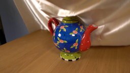
视觉工具实际返回图片 2
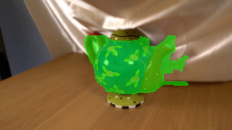
视觉工具实际返回图片 3

视觉工具实际返回图片 4
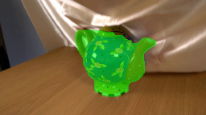
视觉工具实际返回图片 5
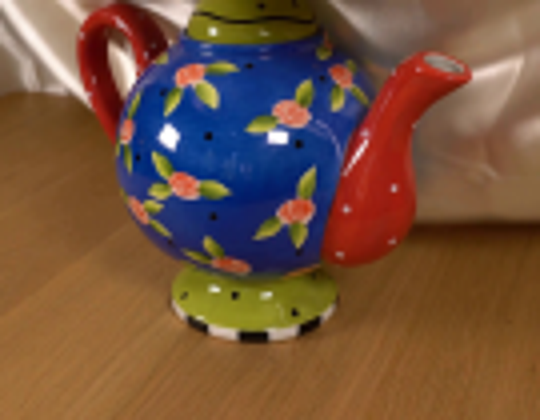
视觉工具实际返回图片 6

视觉工具实际返回图片 7
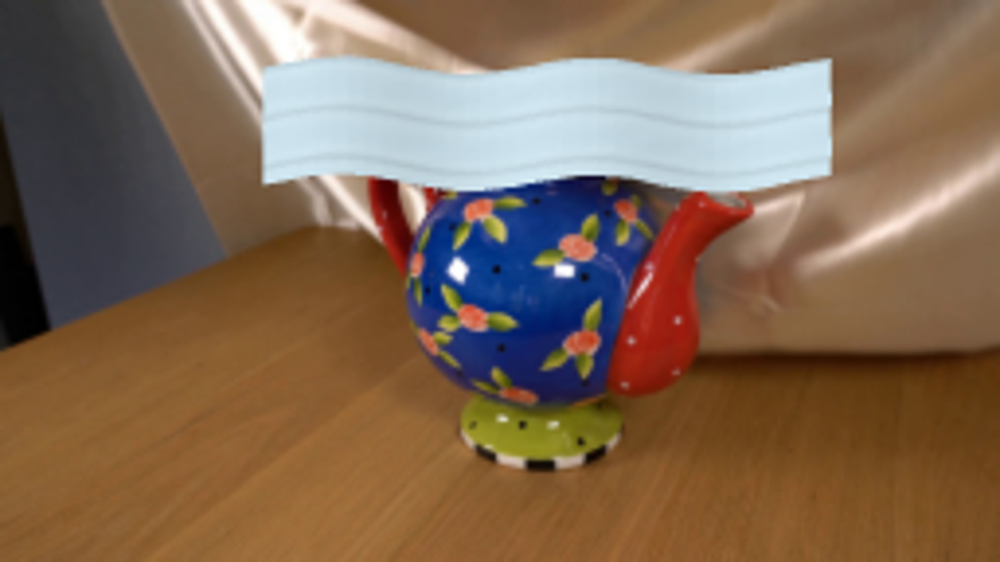
视觉工具实际返回图片 8

视觉工具实际返回图片 9
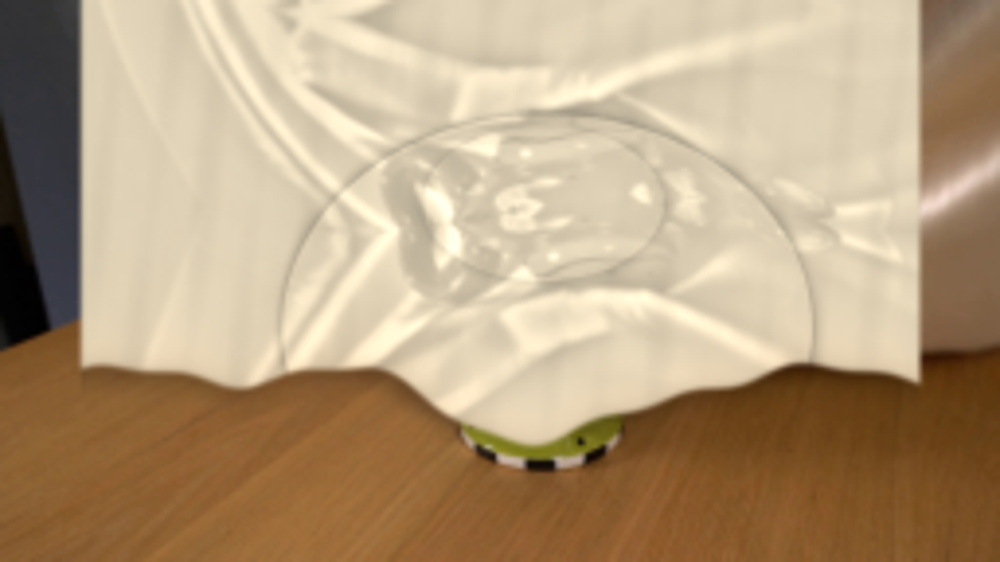
视觉工具实际返回图片 10
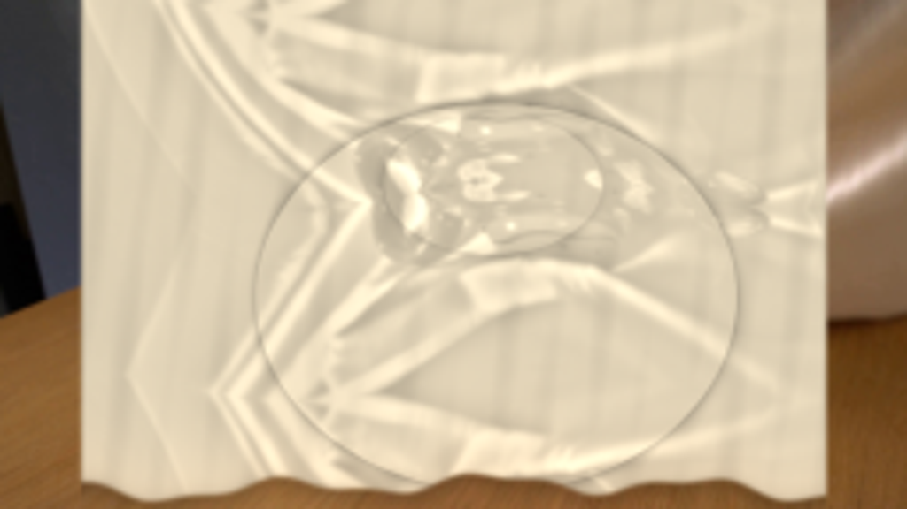
视觉工具实际返回图片 11

视觉工具实际返回图片 12
视觉工具实际返回图片 13
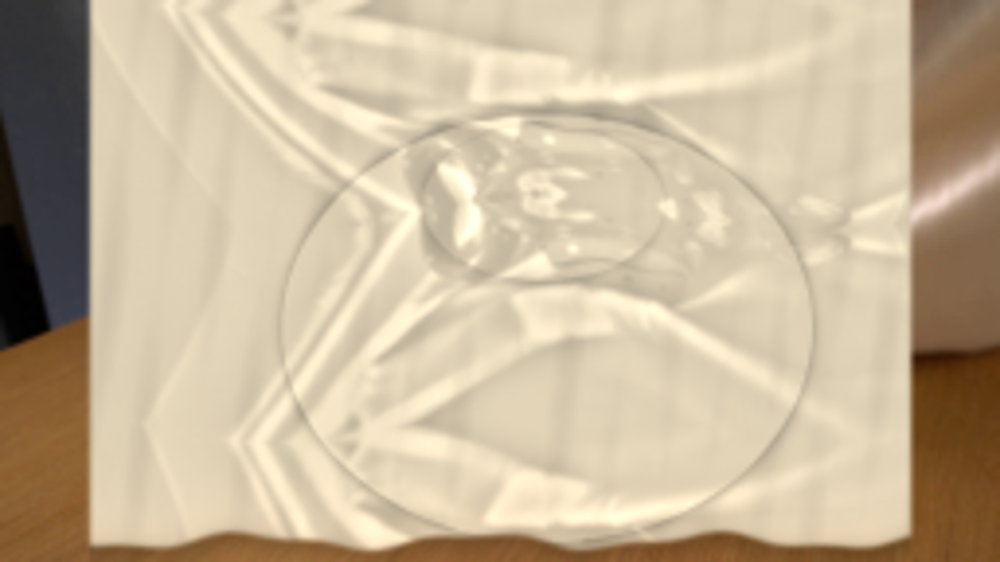
视觉工具实际返回图片 14
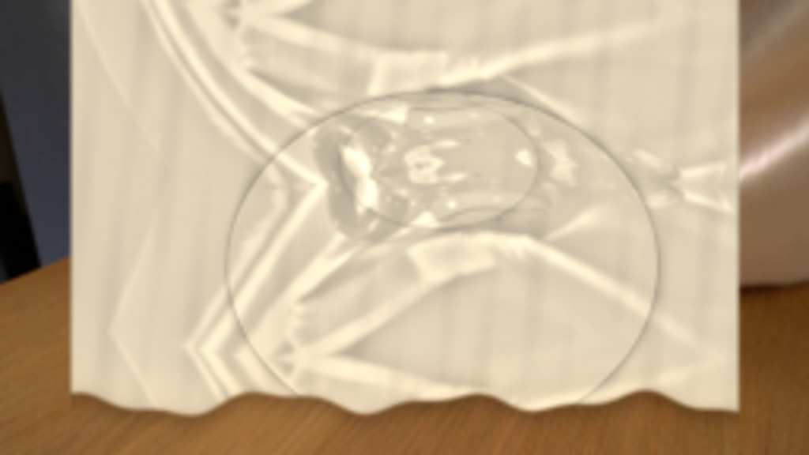
视觉工具实际返回图片 15
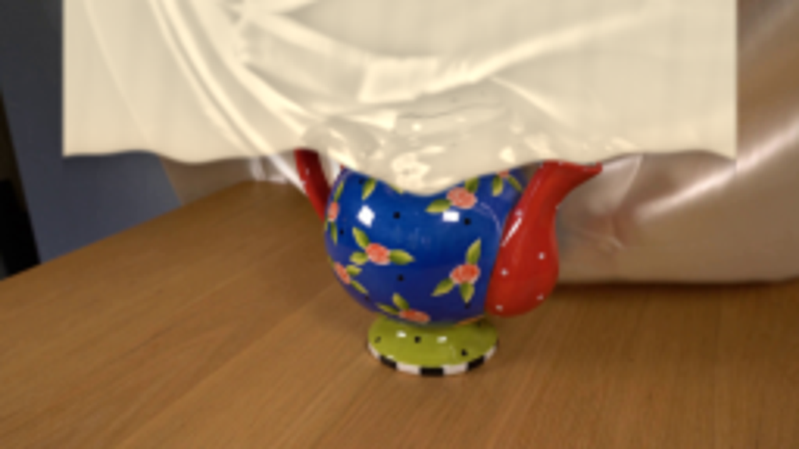
视觉工具实际返回图片 16
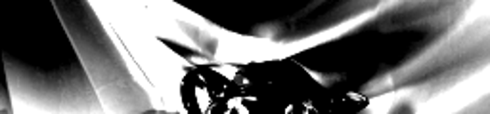
视觉工具实际返回图片 17
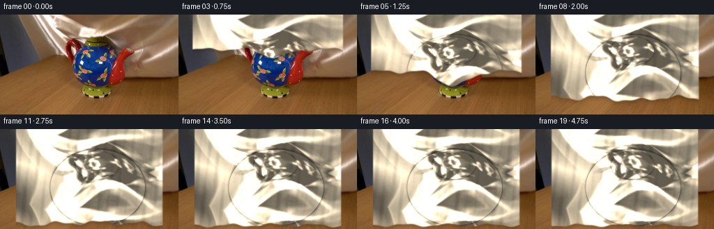
视觉工具实际返回图片 18
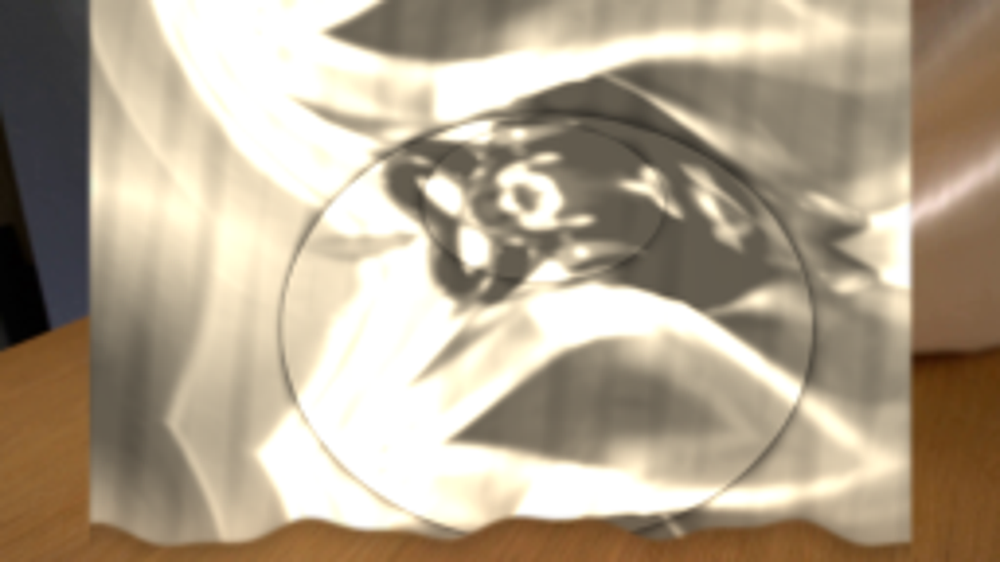
视觉工具实际返回图片 19
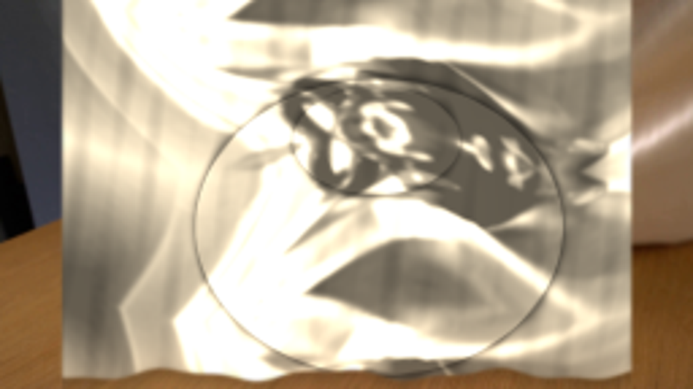
视觉工具实际返回图片 20
视觉工具实际返回图片 21
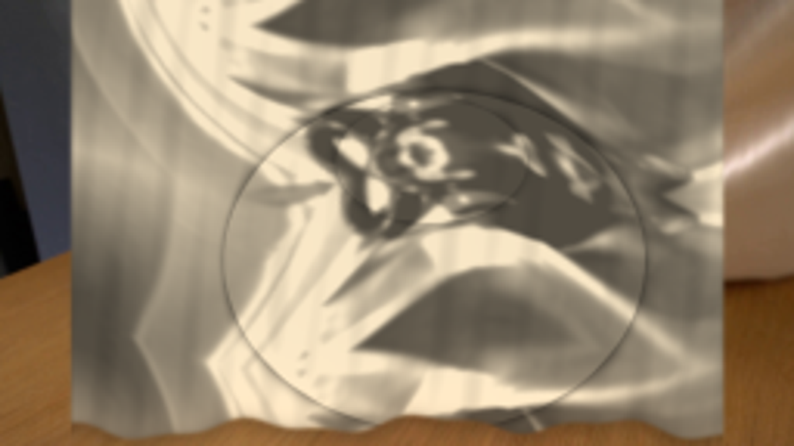
视觉工具实际返回图片 22
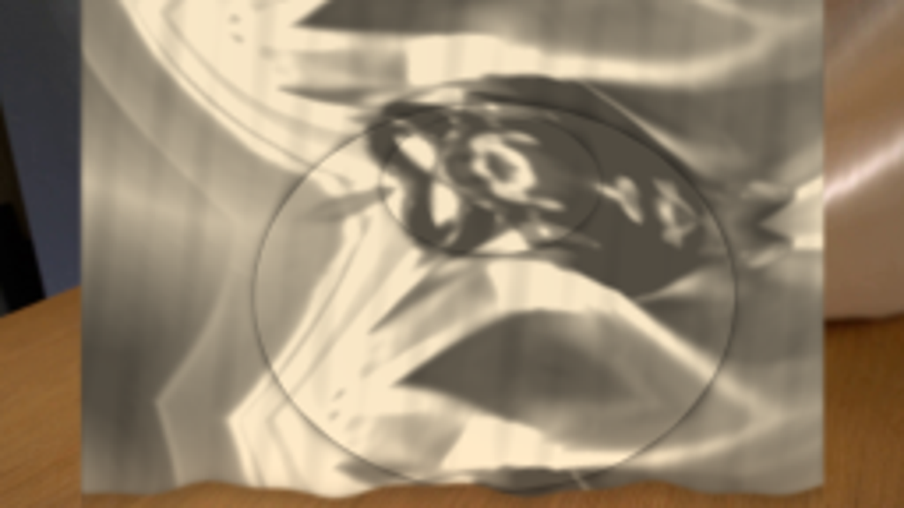
视觉工具实际返回图片 23
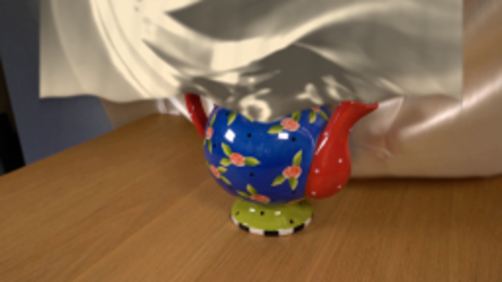
保存候选 4 份；完成命令 35 次；可验证图片返回 23 张。原始 API 响应与完整日志保留在本地。